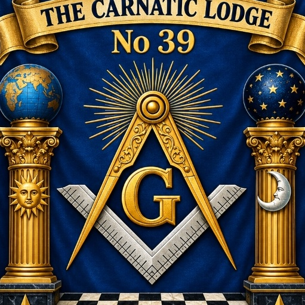

W.Bro. Avinash Naidu
Worshipful Master
Presiding as Master for the year 2026, leading The Carnatic Lodge No: 39 with devotion to fraternal harmony, upright character, and steadfast commitment to our sacred motto "Love and Truth".

The mission of The Carnatic Lodge No: 39 is to promote a way of life that binds like-minded men in a worldwide brotherhood dedicated to moral rectitude, intellectual development, and universal charity.
Under the auspices of the Grand Lodge of India, we provide our brethren with an inspiring environment where men of good report—regardless of race, creed, or social standing—meet together on the level of equality and friendship.
Our vision is to remain an enduring pillar of moral leadership and charitable benevolence in Chennai, inspiring successive generations to practice out of the Lodge those virtues inculcated within it.

Emblazoned on our consecrated lodge banner, Love and Truth are the enduring compass points that guide our fraternal labours, character formation, and philanthropic works.
Freemasonry does not prescribe religious dogma; rather, it provides a moral compass rooted in these three timeless principles.
By the exercise of brotherly love, we are taught to regard the whole human species as one family—the high and low, the rich and poor; who, as created by one Almighty Parent, are to aid, support, and protect each other.
To relieve the distressed is a duty incumbent on all men, but particularly on Freemasons, who are linked together by an indissoluble chain of sincere affection. To soothe the unhappy, sympathize with their misfortunes, and restore peace to their troubled minds is the grand aim we have in view.

Truth is a divine attribute and the foundation of every virtue. To be good and true is the first lesson we are taught in Freemasonry. On this theme we contemplate, and by its dictates endeavor to regulate our conduct through hypocrisy-free sincerity.
The Lodge is presided over by the Worshipful Master and his dedicated council of officers, faithfully administering the labours, traditions, and benevolent works of The Carnatic Lodge No: 39.
Presiding as Master for the year 2026, leading The Carnatic Lodge No: 39 with devotion to fraternal harmony, upright character, and steadfast commitment to our sacred motto "Love and Truth".
Having faithfully presided over the Lodge, he supports the Worshipful Master and brethren as senior fraternal counsellor, ensuring continuity of lodge traditions and fellowship.
Stationed in the West, Bro. Santhosh Nagarajan assists the Master in presiding over lodge meetings, supporting fraternal instruction, and promoting harmonious fellowship.
Stationed in the South, superintending fraternal fellowship and cordial hospitality during the Festive Board, while assisting in the guidance of newer brethren.
Serving the Lodge in spiritual invocations as Chaplain and managing executive administration as Secretary—conducting correspondence, issuing summonses, and maintaining lodge records.
Directs lodge proceedings, fraternal protocol, and meeting decorum with dignity, precision, and respectful adherence to established Masonic traditions.
The complete cadre of Brethren invested and appointed to serve The Carnatic Lodge No: 39 for the Masonic Year 2026.
A fundamental tenet of Freemasonry is that an individual comes forward of their own free will and accord. Masons do not aggressively recruit; historically, it is the seeker who petitions the Craft.
If you believe in a Supreme Being, possess a good moral reputation, and desire to join a fellowship dedicated to mutual self-improvement and community service, we welcome your earnest inquiry.